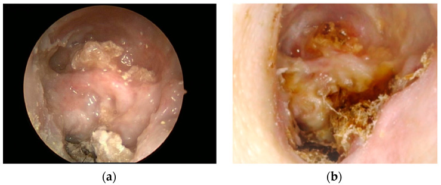
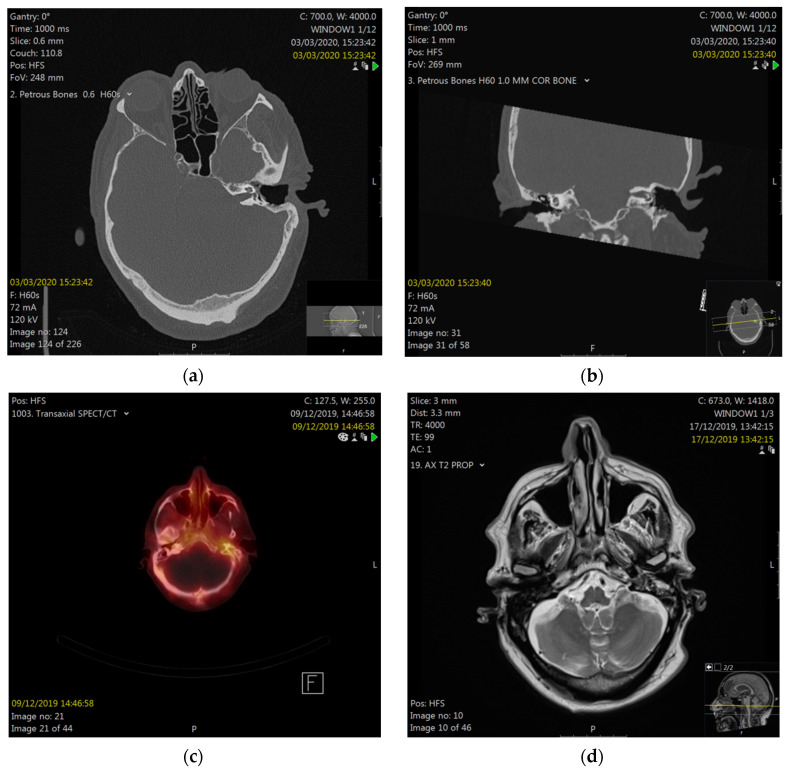
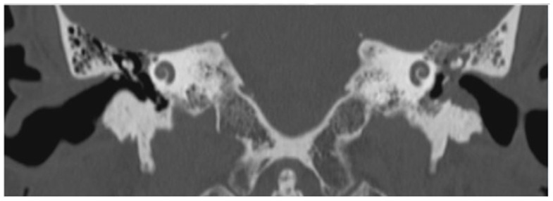

3104 — Hoại tử xương thái dương & hẹp ống tai ngoài sau xạ vòm họng: "viêm tai ngoài" kéo dài 8–10 năm sau xạ
Tags: pattern:hoai-tu-xuong pattern:viem-sau-xa pattern:hep-ong-tai-ngoai pattern:chay-mu-tai vung:xuong-thai-duong vung:ong-tai-ngoai vung:tai-giua vung:dau-co protocol:CT-xuong-thai-duong protocol:MRI-dau-co protocol:noi-soi-tai score:Ramsden incidentaloma:khong
Mức chắc chắn (certainty): tổng hợp y văn (literature synthesis) — ghép loạt lớn nhất 145 xương thái dương / 128 bệnh nhân (Laryngoscope 2021, PMC9214913, tóm tắt đầy đủ, bản toàn văn không mở), loạt 33 bệnh nhân có thời gian tiềm tàng và liều xạ (Otol Neurotol 2014, PMC4134375), ca liệt mặt do hoại tử xương thái dương (Diagnostics 2022, PMC9140046, CC BY 4.0), tổng quan hệ thống cholesteatoma ống tai ngoài sau xạ vòm họng (J Clin Med 2023, PMC10004166, CC BY 4.0) và ca hoại tử nền sọ bên được phẫu thuật (Front Oncol 2026, PMC13061727, CC BY 4.0). Nhóm không có bệnh nhân của mình.
Câu chốt: bệnh nhân ung thư vòm họng sống lâu sau xạ trị thường quay lại với chảy mủ tai + đau tai + nghe kém và được điều trị như "viêm tai ngoài tái diễn" — trong khi nền là xương đã hoại tử, không có mạch máu để lành. Hai chốt cần nhớ: (1) thời gian tiềm tàng rất dài — trung bình 8–10 năm, tới 22 năm; (2) thấy xương trắng lộ trong ống tai > 3 tháng = hoại tử xương cho tới khi chứng minh ngược lại, và phải loại tái phát u bằng sinh thiết/mô bệnh trước khi điều trị triệu chứng dài hạn.
1. Tổng quan bệnh học – cơ chế hình ảnh (TẠI SAO)
1.1 Xương thái dương "chết dần": tam chứng Marx trong xương mỏng nhất cơ thể
- Xạ trị gây giảm mạch – giảm oxy – giảm tế bào (hypovascular – hypoxic – hypocellular, tam chứng Marx): tế bào xương chết nhưng không được thay thế vì không có mạch nuôi; mô mềm phủ (da ống tai dày < 1 mm) teo và dễ loét do chấn thương nhỏ (ngoáy tai, nút tai, ống nghe).
- TẠI SAO vị trí hay gặp là ống tai ngoài và xương nhĩ: đây là phần xương mỏng, sát da, nằm trong vùng liều cao của trường chiếu vòm họng–hố sau hàm. Liều trung bình tới xương thái dương bị tổn thương 53,1 Gy và tới xương nhĩ 65,2 Gy trong loạt 33 bệnh nhân (PMC4134375); ca liệt mặt ghi nhận liều tối thiểu 41,8 Gy mới gây hoại tử (PMC9140046) — nghĩa là ngưỡng thấp hơn liều chữa bệnh, nên mọi bệnh nhân xạ vùng tai–vòm đều có nguy cơ.
- TẠI SAO tiềm tàng 8–10 năm: chu chuyển xương chậm (tạo cốt bào–hủy cốt bào theo chu kỳ nhiều tháng) nên hoại tử biểu hiện sau khi lớp xương cuối cùng mất nuôi đã bị đào thải. Số liệu: trung bình 10 năm ở 145 xương (PMC9214913); 1–22 năm, trung bình 7,9 năm ở 33 bệnh nhân (PMC4134375).
- TẠI SAO CT thấy "xương gặm" chứ không chỉ "viêm": hoại tử → hủy xương vá víu, mảnh xương chết (sequestrum), xơ hóa quanh và mô mềm lấp ống tai; mất liên tục vỏ xương nhĩ là dấu không hồi phục bằng kháng sinh (Hình CT bên dưới).
- Hệ quả điều trị: kháng sinh chỉ diệt bội nhiễm, không tái tạo mạch; vì vậy kháng sinh làm hết mủ nhưng xương lộ vẫn còn — đúng như loạt 33 ca: điều trị bảo tồn giảm triệu chứng nhưng không loại bỏ xương lộ ở đa số (PMC4134375).
1.2 Hẹp ống tai ngoài: cùng tổn thương, biểu hiện khác
- Da ống tai sau xạ teo, mất tuyến ráy, xơ hóa → hẹp lòng ống tai tiến triển, đôi khi bít hoàn toàn; bệnh nhân phàn nàn ù tai, nghe kém dẫn truyền, khó làm sạch ráy, dễ viêm tai ngoài–viêm tai giữa ứ mủ phía sau chỗ hẹp.
- TẠI SAO hẹp lại nguy hiểm: chỗ hẹp giữ ẩm và mảnh sừng → cholesteatoma ống tai ngoài thứ phát. Bệnh nhân xạ vòm họng có nguy cơ cholesteatoma ống tai cao gấp 18 lần dân số chung, xuất hiện trung bình 6,5 năm sau xạ (0,5–15,4 năm), ưu thế thành trước và thành dưới ống tai (PMC10004166).
- Tần suất hẹp ống tai sau xạ: chưa có con số thống nhất — cần tra; các loạt mô tả hẹp/xơ ống tai như một phần của phổ tổn thương da–xương sau xạ cùng với hoại tử xương, không tách riêng.
1.3 Số liệu định lượng nằm lòng
| Đại lượng | Số liệu | Nguồn |
|---|---|---|
| Thời gian tiềm tàng tới hoại tử xương thái dương | trung bình 10 năm (145 xương thái dương) | PMC9214913 |
| Thời gian tiềm tàng (loạt khác) | 1–22 năm, trung bình 7,9 năm | PMC4134375 |
| Liều xạ tới xương thái dương bị tổn thương | trung bình 53,1 Gy; xương nhĩ 65,2 Gy | PMC4134375 |
| Liều tối thiểu gây hoại tử (ca liệt mặt) | 41,8 Gy | PMC9140046 |
| Phân bố Ramsden lúc chẩn đoán | 76% khu trú (ống tai + xương nhĩ) / 24% lan tỏa | PMC9214913 |
| Tỉ lệ lan tỏa ở lần khám cuối | 37% | PMC9214913 |
| Yếu tố nguy cơ lan tỏa (đa biến) | đái tháo đường, xạ 3D-CRT, ung thư da quanh tai | PMC9214913 |
| Triệu chứng hay gặp (33 ca) | chảy mủ tai 15, nghe kém 13, đau tai 12 | PMC4134375 |
| Bội nhiễm khuẩn | 15/33, trong đó S. aureus 9 | PMC4134375 |
| Liệt mặt trong hoại tử xương thái dương | 2,9% | PMC9140046 |
| Nguy cơ cholesteatoma ống tai sau xạ vòm họng | 18× dân số chung; 6,5 năm (0,5–15,4) | PMC10004166 |
| Viêm tai giữa ứ dịch sau xạ vòm họng | 32,4% bệnh nhân (phân tích gộp) | PMC13460465 |
Đọc số cho đúng: "76% khu trú" là tại thời điểm chẩn đoán, không phải tiên lượng — 37% bệnh nhân đã chuyển sang lan tỏa ở lần theo dõi cuối (PMC9214913). Vì vậy bệnh "khu trú" vẫn phải theo dõi dài hạn, không được coi là lành.
2. Mẫu hình + chẩn đoán phân biệt theo vị trí lan (Gamut)
- Nhóm A — khu trú ống tai ngoài/xương nhĩ (Ramsden khu trú): xương trắng lộ ở sàn/thành ống tai, chảy mủ ít, đau vừa, màng nhĩ có thể còn; CT: hủy xương khu trú vỏ xương nhĩ, không lan vào chũm.
- Nhóm B — lan tỏa trong xương thái dương (Ramsden lan tỏa): đau dữ dội, mủ nhiều, hủy xương chũm–tai trong, có thể liệt mặt (2,9%), viêm mê nhĩ, áp-xe nội sọ; CT: hủy xương rộng, mảnh xương chết, mất vỏ ốc tai–tiền đình.
- Nhóm C — lan ra ngoài xương thái dương: khớp thái dương–hàm, hố dưới thái dương, nền sọ, nội sọ; đây là nhóm bảo tồn luôn thất bại, bắt buộc phẫu thuật + tạo hình che phủ (PMC9214913, PMC13061727).
- Nhóm D — tái phát ung thư (vòm họng/ung thư ống tai): khối thịt, chảy máu, đau sâu, liệt dây thần kinh sọ, không đáp ứng kháng sinh; chỉ mô bệnh mới loại trừ — đây là lý do mọi mô hạt trong ống tai đã xạ đều phải sinh thiết.
- Nhóm E — viêm tai ngoài ác tính (hoại tử nền sọ do Pseudomonas): người đái tháo đường lớn tuổi, đau dữ dội về đêm, mô hạt đáy ống tai, liệt dây VII–XII, CT/MRI hủy xương nền sọ; không có tiền sử xạ là chốt loại quan trọng nhất.
- Nhóm F — cholesteatoma ống tai ngoài thứ phát sau xạ: túi sừng ở thành trước/dưới ống tai, hủy xương khu trú, tiền sử xạ vòm họng 6,5 năm; khác hoại tử xương ở chỗ có khối sừng chứ không chỉ xương lộ.
- Nhóm G — hoại tử xương do thuốc (MRONJ) ở ống tai: tiền sử bisphosphonate/denosumab hoặc teriparatide, không có xạ — cơ chế và xử trí gần hoại tử xương nhưng bối cảnh thuốc là chốt.
Ba câu hỏi định vị: (1) Có tiền sử xạ vùng tai–vòm họng không, cách đây bao nhiêu năm? (2) Xương lộ > 3 tháng hay chỉ viêm da ống tai? (3) Có dấu hiệu lan: liệt mặt, chóng mặt, đau sâu, khối thịt?
3. Bảng so sánh phân biệt (ma trận đối chiếu)
| Thực thể (entity) | Hình ảnh điển hình (nội soi / CT / MRI) | Chốt vào (rule-in) | Chốt loại (rule-out) | Gợi ý xác nhận |
|---|---|---|---|---|
| Hoại tử xương thái dương | Xương trắng lộ ở sàn/thành ống tai; CT hủy xương vá víu + mảnh xương chết + xơ hóa | Tiền sử xạ + xương lộ > 3 tháng + CT hủy xương | Mô hạt không có xương lộ, CT xương bình thường → nghĩ viêm da ống tai | Nội soi + CT xương thái dương lát 0,5 mm; sinh thiết mô hạt |
| Tái phát ung thư vòm họng/ống tai | Khối thịt dễ chảy máu, hủy xương một bên không đều, xâm lấn mô mềm | Khối thịt + chảy máu + liệt dây sọ + hủy xương tiến triển | Xương lộ phẳng, không khối, không tiến triển nhiều năm → hoại tử xương | Sinh thiết bắt buộc; MRI T1 sau tiêm + DWI; PET/CT |
| Viêm tai ngoài ác tính | Mô hạt đáy ống tai, đau dữ dội; CT hủy xương nền sọ; MRI ngấm lan | Đái tháo đường + đau đêm + Pseudomonas + hủy xương nền sọ | Có tiền sử xạ đúng vùng → nghĩ hoại tử xương do xạ hơn | Cấy mô sâu, CT/MRI nền sọ, theo dõi đáp ứng kháng sinh |
| Cholesteatoma ống tai sau xạ | Túi sừng thành trước/dưới ống tai, hủy xương khu trú, màng nhĩ nguyên | Khối sừng + tiền sử xạ vòm họng + hủy xương khu trú | Chỉ xương lộ không có khối sừng → hoại tử xương | Nội soi, CT; mổ lấy cholesteatoma |
| Hoại tử xương do thuốc (MRONJ) | Xương lộ ống tai, không có xạ, tiền sử bisphosphonate/denosumab | Thuốc chống hủy xương + xương lộ > 8 tuần | Có xạ vùng tai → hoại tử do xạ | Bệnh sử thuốc, CT |
| Viêm tai giữa ứ dịch sau xạ | Màng nhĩ lõm, dịch vàng sau màng nhĩ, không xương lộ | Tiền sử xạ + màng nhĩ lõm/dịch, xương ống tai nguyên | Xương lộ/hủy xương → không phải chỉ ứ dịch | Nội soi, nhĩ lượng đồ (bài 1704) |

Nội soi tai trái lúc nhập viện (a) và sau 6 tháng (b): xương hoại tử lộ rộng ở sàn ống tai và gờ mặt. Nguồn: PMC9140046, CC BY 4.0.
CT thì xương, mặt phẳng trục (a) và vành (b): hủy xương không đều sàn ống tai ngoài trên nền xương đã mổ. Nguồn: PMC9140046, CC BY 4.0.4. Protocol & phân độ
4.1 Chẩn đoán hình ảnh
| Bước | Việc làm | Ngưỡng / lý do |
|---|---|---|
| 1 | Nội soi tai hai bên, ghi vị trí–diện xương lộ, chụp ảnh | Xương lộ > 3 tháng = định nghĩa hoại tử xương |
| 2 | CT xương thái dương không cản quang, lát 0,5 mm, trục + vành | Thấy hủy xương, mảnh xương chết, xơ hóa, mô mềm lấp; đánh giá lan vào chũm/tai trong/nền sọ |
| 3 | MRI đầu cổ có cản quang khi nghi tái phát u, liệt dây sọ, biến chứng nội sọ | T1 sau tiêm + T2 fat-sat + DWI; phân biệt mô xơ–viêm với u |
| 4 | Sinh thiết mô hạt/khối trong ống tai đã xạ | Bắt buộc để loại tái phát ung thư trước khi điều trị dài hạn |
| 5 | Thính lực đồ + nhĩ lượng | Theo dõi điếc dẫn truyền do hẹp/cholesteatoma và điếc tiếp nhận do tổn thương tai trong |
| 6 | PET/CT khi vẫn nghi u sau MRI | Không dùng thay sinh thiết |
4.2 Phân độ (dùng để quyết định bảo tồn hay mổ)
- Ramsden 1975: khu trú = giới hạn ở ống tai ngoài + xương nhĩ, đau và mủ nhẹ; lan tỏa = hoại tử rộng xương thái dương, lan tới mê nhĩ, dây VII, khớp thái dương–hàm, não, đau dữ dội và mủ nhiều (dẫn qua PMC9140046). Loạt 145 xương: 76% khu trú / 24% lan tỏa lúc chẩn đoán, 37% lan tỏa lúc theo dõi cuối (PMC9214913).
- Morrissey–Grigg 2011: I = loét da ống tai chưa có tổn thương xương; IVb = lan tới nền sọ (dẫn qua PMC9140046) — hữu ích để phân biệt viêm da đơn thuần với hoại tử xương thật.
- Nguyên tắc điều trị theo độ lan: khu trú → bảo tồn (làm sạch ống tai, kháng sinh tại chỗ theo cấy, gắp mảnh xương chết, kiểm soát đái tháo đường); lan tỏa → phẫu thuật (khoét chũm, che phủ bằng vạt cơ thái dương, cắt xương rộng, bịt ống tai khi cần). Khi đã lan ra ngoài chũm/hố dưới thái dương, bảo tồn luôn thất bại (PMC9214913).
4.3 Sơ đồ quyết định
flowchart TD
A[Bệnh nhân đã xạ vùng tai-vòm họng, chảy mủ tái diễn] --> B[Nội soi tai và chụp ảnh]
B --> C{Xương trắng lộ trên 3 tháng}
C -->|Không| D[Điều trị viêm da ống tai, kiểm tra lại]
C -->|Có| E[CT xương thái dương 0,5 mm]
E --> F{Có lan chũm, tai trong, nền sọ hoặc liệt dây VII}
F -->|Không| G[Ramsden khu trú: bảo tồn, làm sạch, kháng sinh theo cấy]
F -->|Có| H[MRI có cản quang + sinh thiết mô hạt]
H --> I{Loại trừ tái phát u}
I -->|Có u| J[Chuyển ung thư đầu cổ]
I -->|Không| K[Phẫu thuật: cắt xương hoại tử, vạt cơ thái dương]
G --> L[Theo dõi 3-6 tháng, chụp lại nếu đau tăng]
4.4 Theo dõi và dự phòng
- Khám tai mỗi 6–12 tháng ở mọi bệnh nhân xạ vòm họng sống > 5 năm — vì thời gian tiềm tàng tới 22 năm.
- Kiểm soát đái tháo đường là can thiệp có bằng chứng nhất (yếu tố nguy cơ lan tỏa, PMC9214913).
- Tránh chấn thương nhỏ: không ngoáy tai, hạn chế đặt nút tai/ống nghe cứng ở tai đã xạ.
- Điều trị ứ dịch sau xạ (32,4%) bằng đặt thông nhĩ khi cần — nhưng không đặt thông nhĩ qua vùng xương hoại tử đang hoạt động.
5. Biến thể bình thường & cạm bẫy
- "Viêm tai ngoài tái diễn nhiều năm" ở bệnh nhân đã xạ = hoại tử xương cho tới khi chứng minh ngược lại; điều trị kháng sinh–corticoid tại chỗ kéo dài chỉ che triệu chứng.
- Cạm bẫy thời gian: bệnh xuất hiện 8–10 năm sau xạ (tới 22 năm) — bệnh nhân và bác sĩ đều đã "quên" tiền sử xạ; phải hỏi lại.
- Cạm bẫy "da còn hồng hào": da ống tai mỏng, xương đã chết vẫn có thể phủ da hồng — không loại trừ hoại tử xương.
- Cạm bẫy CT: hủy xương một bên, bờ không đều, có khối mô mềm = phải loại u; đừng gọi ngay là "hoại tử xương do xạ" khi chưa có mô bệnh.
- Cạm bẫy mổ: khoét chũm ở xương đã xạ lành rất kém; nếu mở rộng khoang thì cần vạt cơ che phủ ngay, tránh để hốc mở không có mạch nuôi (PMC13061727).
- Cạm bẫy "hẹp ống tai = ráy": hẹp do xơ hóa không lấy được bằng bơm rửa; đẩy mạnh dễ rách da và làm lộ xương thêm.
- Cạm bẫy liệt mặt: liệt mặt trong hoại tử xương chỉ 2,9% nhưng không hồi phục ở nhiều ca — là dấu hiệu lan tỏa, không phải "liệt Bell".
6. Tự lượng giá — Blind Quiz
Ca 1 — Nam 69 tuổi, xạ hóa trị ung thư amiđan 20 năm trước, nay đau tai trái và chảy dịch lẫn máu. Nội soi:
- Hỏi: Mô tả tổn thương? Chẩn đoán hàng đầu? Cần làm gì trước khi kết luận?
Bấm để hiện đáp án
- Xương trắng, hoại tử lộ rộng ở sàn ống tai và gờ mặt, hốc chũm mở (bệnh nhân đã khoét chũm 30 năm trước); mủ lẫn máu.
- Chẩn đoán: hoại tử xương thái dương do xạ (Ramsden khu trú/lan tỏa tùy CT).
- Trước khi kết luận: CT xương thái dương 0,5 mm + sinh thiết mô hạt để loại tái phát ung thư; khám dây VII và thính lực.
- Nguồn: Diagnostics 2022, PMC9140046, CC BY 4.0.
Ca 2 — Cùng bệnh nhân, CT xương thái dương:
- Hỏi: Dấu hiệu nào trên CT xác nhận hoại tử xương? Cần phân biệt với gì?
Bấm để hiện đáp án
- Hủy xương vá víu sàn ống tai ngoài (mũi tên), mất liên tục vỏ xương nhĩ, mảnh xương chết và xơ hóa quanh, trên nền xương đã mổ khoét chũm.
- Phân biệt: tái phát ung thư (khối mô mềm + hủy xương tiến triển), viêm tai ngoài ác tính (không có tiền sử xạ, đái tháo đường), cholesteatoma ống tai (khối sừng, hủy xương khu trú).
- Nguồn: PMC9140046, CC BY 4.0.
Ca 3 — Bệnh nhân xạ vòm họng 6 năm, nghe kém + chảy mủ; CT thấy mô mềm lấp hốc nhĩ và hủy xương thành trước ống tai:

- Hỏi: Hai khả năng chính? Dấu hiệu nào nghiêng về cholesteatoma? Vì sao bệnh nhân này có nguy cơ cao hơn dân số chung?
Bấm để hiện đáp án
- Hai khả năng: hoại tử xương thái dương và cholesteatoma ống tai ngoài thứ phát sau xạ.
- Nghiêng về cholesteatoma: mô mềm dạng khối lấp hốc nhĩ + hủy xương khu trú thành trước/dưới ống tai, màng nhĩ còn; hoại tử xương thuần thường xương lộ phẳng, xơ hóa, không khối sừng.
- Nguy cơ: bệnh nhân xạ vòm họng có nguy cơ cholesteatoma ống tai gấp 18 lần, xuất hiện trung bình 6,5 năm sau xạ (0,5–15,4 năm).
- Nguồn: J Clin Med 2023, PMC10004166, CC BY 4.0.
Bài liên quan chéo
- 272 – Sarcoma xương sọ do xạ
- 253 – Viêm xương nền sọ giữa không do tai
- 236 – Viêm tai xương chũm và biến chứng nội sọ
- 1765 – Hạ thiết sau xạ trị đầu cổ
- 1704 – Viêm tai giữa mạn/cholesteatoma ở trẻ có cấy ốc tai
- 700 – Tổng quan Đầu Mặt Cổ
Không dùng để chẩn đoán độc lập khi chưa có người hướng dẫn.